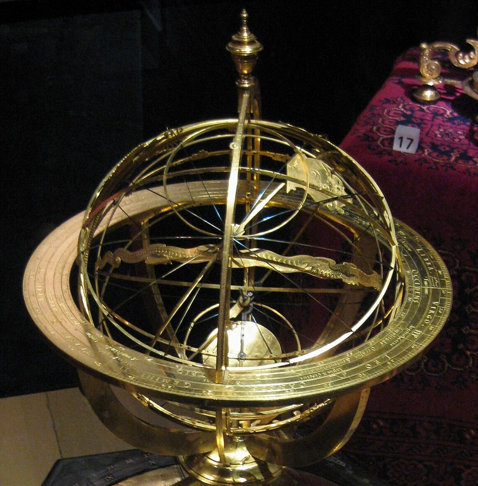

Nella pagina 1.1 abbiamo descritto una stella con la sua declinazione $\delta$ e il suo angolo orario $H$, che cresce mentre il cielo ruota. Questo basta per le stelle fisse, ma il Sole, la Luna e i pianeti si muovono fra esse, e per seguirli ci servono due coordinate per ogni punto della sfera celeste, e un modo di passare da uno all’altro dei sistemi di coordinate che usano gli astronomi.
1 · OsservazioneI tre sistemi di coordinate
Prendiamo Aldebaran, l’occhio rosso del Toro, vista da Roma il 1º gennaio 2026 alle 20:00 ora locale (19:00 UT). A seconda di ciò rispetto a cui la misuriamo, possiamo dare la sua posizione in tre sistemi di coordinate:
| Misurata rispetto a | Coordinate | Aldebaran |
|---|---|---|
| l’orizzonte locale (bussola e quadrante) | azimut $A$, altezza $a$ | $125{,}01^\circ$, $53{,}67^\circ$ |
| l’equatore celeste: un catalogo moderno (2026) | ascensione retta $\alpha$, declinazione $\delta$ | $69{,}354^\circ$ ($4^\text{h}37^\text{m}$), $16{,}559^\circ$ |
| l’eclittica, il percorso annuo del Sole (2026) | longitudine eclittica $\lambda$, latitudine eclittica $\beta$ | $70{,}153^\circ$, $-5{,}465^\circ$ |
| l’eclittica: il catalogo di Tolomeo (137 d.C.) | longitudine eclittica $\lambda$, latitudine eclittica $\beta$ | $42^\circ 40'$ ($42{,}667^\circ$), $-5^\circ 10'$ ($-5{,}167^\circ$) |
Il cielo del 2026 attorno ad Aldebaran, guardando a sud, con il nord in alto e l’est a sinistra, sulla griglia equatoriale.
Eclittica: il percorso annuo del Sole. Aldebaran è 16,6° a nord dell’equatore ma 5,5° a sud dell’eclittica, la $\delta$ e la $\beta$ della tabella.
Nella figura
- stelle
- tutte le stelle più luminose della magnitudine 4,6; più grandi se più luminose
- puntinato
- la Via Lattea, disegnata come una fascia attorno all’equatore galattico
Le coordinate orizzontali cambiano di continuo: un’ora dopo la stella è più alta e più a sud. Quelle equatoriali restano le stesse per tutta la notte e per anni, e cambiano solo nel corso dei secoli, insieme a quelle eclittiche.
Dai tempi di Tolomeo la longitudine eclittica di Aldebaran è cresciuta di circa 26° e la sua declinazione è cambiata di quasi 6°, ma la sua latitudine eclittica si è spostata solo di 8′. Tolomeo aveva notato che le stelle si spostano parallelamente all’eclittica, così che «le loro posizioni in latitudine rispetto all’eclittica devono necessariamente restare le stesse» (Almagest VII 4), ed è per questo che diede il suo catalogo in coordinate eclittiche.
2 · ModelloSistemi di coordinate e rotazioni
Che cos’è un sistema di riferimento
Per stabilire delle coordinate sulla sfera celeste, un sistema di riferimento, facciamo tre scelte: un cerchio massimo (il cerchio fondamentale), uno dei suoi due poli, e un’origine sul cerchio. La longitudine del sistema si conta allora lungo il cerchio a partire dall’origine, e la sua latitudine dal cerchio verso il polo. Nel sistema eclittico sono la longitudine e la latitudine eclittiche.
In termini di vettori, mettiamo $x$ verso l’origine, $z$ verso il polo e $y$ alla longitudine del sistema $90^\circ$, così che il sistema sia destrorso. Una direzione con longitudine del sistema $l$ e latitudine $b$ è allora
esattamente come per il sistema del cielo della pagina 1.1. I tre sistemi di coordinate della sezione 1 sono sistemi di questo tipo, che differiscono solo per queste scelte:
| Sistema | Cerchio fondamentale | Polo | Origine | Coordinate |
|---|---|---|---|---|
| equatoriale | l’equatore celeste | P, polo nord celeste | γ, il punto vernale | $\alpha$, $\delta$ |
| eclittico | l’eclittica, il percorso annuo del Sole | K, polo nord dell’eclittica | γ, il punto vernale | $\lambda$, $\beta$ |
| orizzontale | l’orizzonte | Z, lo zenit | il punto nord | $A$, $a$ |
L’equatore e l’eclittica si incrociano in due punti opposti. Uno di essi, il punto vernale γ (scritto anche ♈︎, il segno dell’Ariete), è dove il Sole attraversa l’equatore andando verso nord all’equinozio di marzo, ed entrambi i sistemi lo prendono come origine.


L’ascensione retta si dà spesso in ore, con $24^\text{h} = 360^\circ$ e quindi $1^\text{h} = 15^\circ$, il che rende i $69{,}354^\circ$ di Aldebaran pari a $4^\text{h}37^\text{m}$. Si usano le ore perché il cielo ruota di circa $15^\circ$ all’ora, quindi l’ascensione retta in ore è all’incirca il tempo fra il passaggio al meridiano di γ e quello della stella.
L’azimut
L’azimut $A$ è una direzione di bussola, $0^\circ$ a nord, $90^\circ$ a est e $180^\circ$ a sud. Visto dallo zenit cresce in senso orario, al contrario di $\alpha$ e $\lambda$, che crescono in senso antiorario visti dai loro poli.
Quindi l’azimut non è semplicemente la longitudine nel sistema orizzontale della pagina 1.1 ($x$ a sud, $y$ a est, $z$ allo zenit). Lì il nord è $-x$ e l’est è $+y$, quindi
$$\mathbf s_\text{or} = \begin{pmatrix} -\cos a \cos A \\ \cos a \sin A \\ \sin a \end{pmatrix}.$$Come controllo, $A = 0$ dà $(-\cos a, 0, \sin a)$, verso nord, e $A = 90^\circ$ dà $(0, \cos a, \sin a)$, verso est. Meeus (cap. 13) conta invece l’azimut da sud, quindi il suo valore è $A - 180^\circ$.
Cambiare sistema è una rotazione
Per convertire una direzione da un sistema $F$ a un sistema $G$, ci servono le sue componenti lungo gli assi di $G$. Sono i suoi prodotti scalari con gli assi, $s_G^i = \mathbf g_i \cdot \mathbf s$, quindi se scriviamo gli assi di $G$ nelle componenti di $F$ come righe di una matrice $M$,
$$\mathbf s_G = M \, \mathbf s_F, \qquad M = \begin{pmatrix} \mathbf g_1^T \\ \mathbf g_2^T \\ \mathbf g_3^T \end{pmatrix}.$$Le righe di $M$ sono ortonormali, quindi $M^T M = I$ e la trasformazione inversa è la trasposta, $\mathbf s_F = M^T \mathbf s_G$. Poiché entrambi i sistemi sono destrorsi, $\det M = 1$, e $M$ è una rotazione.
Una rotazione conserva i prodotti scalari, e quindi gli angoli, perciò la distanza angolare fra due stelle è la stessa in ogni sistema.
Eclittica ed equatore
L’eclittica è il percorso del Sole fra le stelle nel corso di un anno. Giorno dopo giorno il Sole si sposta verso est lungo di essa, in media di $360^\circ / 365{,}2422 = 0{,}9856^\circ$ al giorno, e torna in γ dopo un anno. Questo moto annuo è distinto dalla rotazione diurna della pagina 1.1, che trascina insieme il Sole e le stelle e non cambia nessuna delle loro coordinate $\alpha, \delta, \lambda, \beta$. La Figura 2 mostra il solo moto annuo.
Poiché i due cerchi si incrociano in γ, i due sistemi hanno in comune l’asse $x$. L’asse $y$ dell’eclittica punta a $\lambda = 90^\circ$, il solstizio d’estate, che sta un angolo $\varepsilon$ a nord dell’equatore in $\alpha = 90^\circ$. Questo angolo è l’obliquità dell’eclittica. In componenti equatoriali i tre assi sono
$$\mathbf x = \begin{pmatrix} 1 \\ 0 \\ 0 \end{pmatrix}, \quad \mathbf y_\text{ecl} = \begin{pmatrix} 0 \\ \cos\varepsilon \\ \sin\varepsilon \end{pmatrix}, \quad \mathbf K = \mathbf x \times \mathbf y_\text{ecl} = \begin{pmatrix} 0 \\ -\sin\varepsilon \\ \cos\varepsilon \end{pmatrix}.$$Il polo K è quindi in $\alpha = 270^\circ$, $\delta = 90^\circ - \varepsilon$. La matrice che ha come colonne questi tre assi porta le componenti eclittiche in quelle equatoriali, ed è una rotazione di $\varepsilon$ attorno all’asse $x$:
$$\mathbf s_\text{eq} = R_x(\varepsilon)\, \mathbf s_\text{ecl}, \qquad R_x(\varepsilon) = \begin{pmatrix} 1 & 0 & 0 \\ 0 & \cos\varepsilon & -\sin\varepsilon \\ 0 & \sin\varepsilon & \cos\varepsilon \end{pmatrix}.$$Svolgendo il prodotto, con $\mathbf s_\text{eq}$ scritto in funzione di $(\alpha, \delta)$ e $\mathbf s_\text{ecl}$ in funzione di $(\lambda, \beta)$, otteniamo
L’ultima riga dà direttamente $\delta$. Le prime due danno $\cos\delta$ per il coseno e per il seno di $\alpha$, quindi $\alpha = \operatorname{atan2}(\cos\delta\sin\alpha,\ \cos\delta\cos\alpha)$, dove $\operatorname{atan2}(y, x)$ è l’angolo, misurato dall’asse $x$, del raggio da $(0, 0)$ a $(x, y)$.
Dividere le due righe per ottenere $\tan\alpha$ e prenderne l’arcotangente farebbe perdere il quadrante, perché $(x, y)$ e $(-x, -y)$ hanno lo stesso rapporto $y/x$. La funzione $\operatorname{atan2}$ usa i segni di entrambi, e mette $\alpha$ nel quadrante giusto.
Per il Sole, la cui latitudine eclittica è $\beta = 0$, si riducono a
$$\sin\delta = \sin\varepsilon \sin\lambda, \qquad \tan\alpha = \cos\varepsilon \tan\lambda.$$Nella figura
- blu
- l’equatore celeste e gli assi del sistema equatoriale
- oro
- l’eclittica e gli assi del sistema eclittico; i due sistemi hanno in comune l’asse $x$, verso γ
- punto e freccia
- il Sole e il suo moto annuo verso est
Equatore e orizzonte
Per collocare una stella nel cielo dell’osservatore, colleghiamo il sistema equatoriale al sistema del cielo della pagina 1.1. I due hanno in comune l’equatore e il polo, e differiscono solo per la direzione di $x$: nel sistema del cielo verso il meridiano, nel sistema equatoriale verso γ, un punto dell’equatore che ruota con il cielo.
Sia $\theta$ l’angolo di cui il cielo ha ruotato da quando γ ha attraversato il meridiano. Il meridiano è allora in $\alpha = \theta$, e una stella di ascensione retta $\alpha$ lo ha attraversato un angolo $\theta - \alpha$ fa, quindi
$$H = \theta - \alpha, \qquad \mathbf s_\text{cielo} = R_z(-\theta)\, \mathbf s_\text{eq}.$$Come controllo, la longitudine della stella nel sistema del cielo è $\alpha - \theta = -H$, come nella pagina 1.1. In questa pagina $\theta$ è un parametro libero, e la pagina 1.3 lo legge da un orologio e lo chiama tempo siderale locale.
Nella pagina 1.1 abbiamo poi inclinato il sistema del cielo sul sistema orizzontale con $R_y(\varphi - 90^\circ)$, e le due rotazioni insieme danno
$$\mathbf s_\text{or} = R_y(\varphi - 90^\circ)\, R_z(-\theta)\, \mathbf s_\text{eq}.$$Con $R_y(\varphi - 90^\circ)$ scritta per esteso (i suoi elementi sono $\pm\sin\varphi$, $\pm\cos\varphi$) e $\mathbf s_\text{cielo} = (\cos\delta\cos H, -\cos\delta\sin H, \sin\delta)$, le tre righe danno
La prima riga è la formula dell’altezza della pagina 1.1. La seconda conferma i segni, perché una stella a est del meridiano ($H < 0$) ha $\sin A > 0$, un azimut orientale. La trasformazione inversa, dall’orizzontale all’equatoriale, è la trasposta.
Nella figura
- blu
- l’equatore celeste
- punteggiato
- il meridiano, per N, Z e S
- θ, α
- archi dell’equatore, disegnati accanto a esso
Lettura
- $I$
- l’angolo fra l’eclittica e l’orizzonte, quando si sceglie «l’eclittica» (esercizio 3)
La trigonometria sferica dalle matrici
Le stesse formule si possono leggere come trigonometria sferica. Il polo P, lo zenit Z e la stella S formano un triangolo sferico (Figura 4), con lati $90^\circ - \varphi$ (da P a Z), $90^\circ - \delta$ e $90^\circ - a$, e con l’angolo orario $H$ come angolo in P.
Le tre righe qui sopra sono le tre regole classiche per quel triangolo: la regola del coseno per il lato ZS, la regola dei seni e la regola «delle cinque parti». Ogni formula di trigonometria sferica usata in questo sito viene, allo stesso modo, dallo svolgere il prodotto con una rotazione.
Tolomeo non aveva né vettori né seni. Otteneva gli stessi numeri dal teorema di Menelao sugli archi di cerchio massimo e da una tavola delle corde (Almagest I 13–14), e pubblicava i risultati come tavole (I 15–16), che verifichiamo nella sezione 4.
Dove le coordinate si rompono
In un polo di un sistema la longitudine del sistema non è definita, perché P non ha ascensione retta, Z non ha azimut, e $\operatorname{atan2}(0, 0)$ non ha valore. Vicino a un polo, un piccolo cambiamento nella posizione della stella produce un grande cambiamento della sua longitudine in quel sistema. Il versore non ha questa singolarità, ed è per questo che il codice di questo sito lavora con i vettori e li converte in angoli solo alla fine.
3 · AdattamentoL’obliquità e l’origine
Il sistema orizzontale richiede la latitudine geografica $\varphi$, che abbiamo misurato nella pagina 1.1, e l’angolo $\theta$, che la pagina 1.3 legge da un orologio. I sistemi equatoriale ed eclittico richiedono due quantità dal cielo, l’angolo $\varepsilon$ fra loro e la loro origine comune γ.
L’obliquità dal Sole di mezzogiorno ai solstizi
A mezzogiorno il Sole è sul meridiano, ad altezza $90^\circ - \varphi + \delta$. Nel corso dell’anno $\delta$ oscilla fra $+\varepsilon$ e $-\varepsilon$, quindi le altezze di mezzogiorno ai due solstizi danno sia $\varepsilon$ sia $\varphi$, proprio come i due passaggi al meridiano di Kochab nella pagina 1.1:
$$\varepsilon = \frac{h_\text{estate} - h_\text{inverno}}{2}, \qquad \varphi = 90^\circ - \frac{h_\text{estate} + h_\text{inverno}}{2}.$$Ad Alessandria, dove osservava Tolomeo, il Sole reale di mezzogiorno del 2025 (Figura 5) sta a 82,240° di altezza al solstizio di giugno e a 35,386° al solstizio di dicembre, che danno $\varepsilon = 23{,}427^\circ$ e la latitudine geografica della città entro 1′.
Questa obliquità è 0,55′ sotto l’obliquità media del 2025, e la rifrazione spiega la differenza: solleva il basso Sole d’inverno molto più dell’alto Sole d’estate, il che riduce l’arco fra i due.
L’origine dall’equinozio di marzo
Nessuna stella segna γ, che è definito dal Sole come il punto in cui esso attraversa l’equatore andando verso nord. Cronometriamo quindi l’equinozio di marzo, l’istante in cui la declinazione del Sole cambia segno, che le altezze di mezzogiorno nei giorni vicini mostrano. In quell’istante il Sole è in γ e la sua longitudine eclittica è 0°; nel 2025 questo è avvenuto il 20 marzo alle 08:48 UT nel cielo di riferimento. Il suo Sole è entro 0,7′ da quello reale, che il Sole percorre in un quarto d’ora, e lo US Naval Observatory dà le 09:01 UT.
StoriaCome Tolomeo misurò l’obliquità
Tolomeo leggeva la distanza dallo zenit del Sole di mezzogiorno su un anello di bronzo posto nel meridiano, e su una lastra di pietra o di legno con un quadrante disegnato sopra, gli strumenti della pagina 1.1. Letture fatte vicino ai solstizi nel corso di vari anni davano, a ciascun solstizio, la stessa distanza (Almagest I 12).
Trovò l’arco fra i solstizi «sempre maggiore di 47⅔° e minore di 47¾°», e adottò $\varepsilon = 23^\circ 51' 20''$. Dice che questo concorda con Eratostene e Ipparco, ma se il valore fosse il loro, o suo e solo vicino ai 24° che essi usavano, è incerto (nota di Toomer a I 12). L’obliquità reale del suo tempo era al di sotto perfino del suo limite inferiore.
Gli equinozi si cronometravano con un anello di bronzo posto nel piano dell’equatore: l’equinozio è il giorno in cui l’interno dell’anello passa dall’essere illuminato da un lato all’essere illuminato dall’altro (Almagest III 1). Ipparco osservò i suoi a Rodi, e ne cita altri letti su un anello del genere ad Alessandria.
4 · VerificaIl modello contro il cielo
Le formule di conversione non contengono approssimazioni, quindi ciò che possiamo verificare è l’obliquità che vi inseriamo. Usiamo i sistemi della sezione 2 con l’obliquità media della data, la parte regolare dell’obliquità, e li confrontiamo con il Sole di riferimento del 2026.
L’obliquità media e la nutazione
L’unico effetto che questi sistemi trascurano è la nutazione, una piccola oscillazione dell’asse terrestre causata soprattutto dalla Luna. Il suo periodo principale è di 18,6 anni, e cambia l’obliquità di qualche secondo d’arco: $\varepsilon_\text{vera} = \varepsilon_\text{media} + \Delta\varepsilon$.
Per isolarla, la Figura 6 prende le coordinate eclittiche del Sole di riferimento per ogni giorno del 2026 e le converte con l’obliquità media della data, come fanno i sistemi della sezione 2. Poi confronta il risultato con le $(\alpha, \delta)$ del Sole di riferimento stesso, calcolate con l’obliquità vera. Poiché entrambi partono dalle stesse $\lambda$ e $\beta$, la differenza è dovuta alla sola nutazione.
Nella figura
- increspatura
- un termine della nutazione con un periodo di due settimane, metà del mese della Luna
La forma della curva segue da $\sin\delta = \sin\varepsilon \sin\lambda$, che sull’eclittica dà la declinazione. Una variazione $\Delta\varepsilon$ la cambia di $(\cos\varepsilon\sin\lambda / \cos\delta)\,\Delta\varepsilon$. Noi trascuriamo $\Delta\varepsilon$, quindi $\Delta\delta = -(\cos\varepsilon \sin\lambda / \cos\delta)\,\Delta\varepsilon$, e al solstizio di giugno, dove il fattore vale 1, $\Delta\delta$ e $-\Delta\varepsilon$ valgono entrambi $-7{,}7''$.
Nel 2026 la declinazione sbaglia al massimo di 7,9″ e l’ascensione retta al massimo di 1,9″. I modelli delle pagine seguenti sbagliano di primi d’arco o più, quindi d’ora in poi trascuriamo la nutazione e usiamo l’obliquità media.
StoriaLe tavole di declinazione e di ascensione retta di Tolomeo
A Tolomeo serviva la declinazione del Sole per ogni punto dell’eclittica, per l’altezza del Sole a mezzogiorno, la durata del giorno e l’ombra di uno gnomone (Almagest II), quindi la pubblicò per ogni grado di longitudine eclittica (I 15), con l’ascensione retta ogni 10° (I 16).
Le formule di conversione della sezione 2, calcolate con la sua obliquità, riproducono le sue declinazioni entro pochi secondi d’arco e le sue ascensioni rette entro il suo arrotondamento al primo, quindi le sue tavole non aggiungono errori propri. La sua obliquità rende le sue declinazioni troppo grandi, con un errore che cresce verso i solstizi, dove arriva a 10,7′; le ascensioni rette dipendono solo debolmente da $\varepsilon$ e sono molto più vicine.
Copernico, confrontando le proprie misure con quelle di Tolomeo, trovò un’obliquità minore e concluse «che anche l’obliquità dell’eclittica è variabile» (De Revolutionibus II 2 [f. 29r]). Parte della differenza era l’errore di Tolomeo, e il resto un cambiamento reale, di cui si occupa la sezione 5.
5 · ResiduoCiò che i sistemi fissi trascurano
I sistemi della sezione 2 sono fissi, ma l’angolo fra loro cambia. L’obliquità è diminuita di 14,5′ dai tempi di Tolomeo, quindi un sistema costruito con l’obliquità vera del suo tempo sbaglierebbe oggi di altrettanto la declinazione del Sole ai solstizi.
Anche l’origine si muove. Poiché γ è definito dal Sole, può muoversi rispetto alle stelle, e lo fa: come ha mostrato la sezione 1 per Aldebaran, le longitudini eclittiche delle stelle crescono nel corso dei secoli mentre le loro latitudini eclittiche cambiano appena, perché γ arretra lungo l’eclittica. Per questo un catalogo dà le posizioni per la propria data. La pagina 2.3 misura il moto di γ.
L’angolo $\theta$ si imposta ancora con un cursore nella Figura 3. Nel cielo dipende dal tempo, perché è l’angolo di cui il cielo ha ruotato dall’ultimo passaggio di γ al meridiano, quindi collocare una stella nel cielo dell’osservatore in un dato istante richiede $\theta$ in quell’istante. La pagina 1.3 si chiede come possa darlo un orologio.
Esercizi
Mostra che la trasformazione dal sistema equatoriale a quello eclittico è $R_x(-\varepsilon)$, e scrivi $\lambda$ e $\beta$ in funzione di $\alpha$ e $\delta$. Poi trova $\lambda$ e $\beta$ di Aldebaran da $\alpha = 69{,}3539^\circ$, $\delta = 16{,}5594^\circ$ (2026,0), con $\varepsilon = 23{,}4359^\circ$. Verifica nella Figura 2.
L’inversa di una rotazione è la sua trasposta. Qual è la trasposta di $R_x(\varepsilon)$?
$R_x(\varepsilon)^T = R_x(-\varepsilon)$: trasporre scambia i due elementi $\sin\varepsilon$, il che equivale a cambiare il segno di $\varepsilon$. Quindi $\mathbf s_\text{ecl} = R_x(-\varepsilon)\,\mathbf s_\text{eq}$, e svolgendo il prodotto:
$$\begin{aligned} \cos\beta \cos\lambda &= \cos\delta \cos\alpha, \\ \cos\beta \sin\lambda &= \cos\varepsilon \cos\delta \sin\alpha + \sin\varepsilon \sin\delta, \\ \sin\beta &= \cos\varepsilon \sin\delta - \sin\varepsilon \cos\delta \sin\alpha. \end{aligned}$$Sono le formule della sezione 2 con $\varepsilon \to -\varepsilon$ e i ruoli dei due sistemi scambiati.
Per Aldebaran, $\mathbf s_\text{eq} = (0{,}3380;\ 0{,}8970;\ 0{,}2850)$ e $\mathbf s_\text{ecl} = (0{,}3380;\ 0{,}9363;\ -0{,}0952)$. Quindi $\sin\beta = -0{,}09525$, $\beta = -5{,}465^\circ$, e $\lambda = \operatorname{atan2}(0{,}93632;\ 0{,}33797) = 70{,}153^\circ$.
Il 21 maggio 2026 il Sole raggiunge $\lambda = 60^\circ$ ($\beta = 0$). Trova la sua declinazione e la sua ascensione retta con $\varepsilon = 23{,}4359^\circ$. Verificale nella Figura 2 il 21 maggio. Poi ripeti con i $23^\circ 51' 20''$ di Tolomeo e confronta il risultato con i suoi valori, $20^\circ 30' 09''$ nella tavola I 15 e $57^\circ 44'$ nella tavola I 16.
Con $\beta = 0$: $\sin\delta = \sin\varepsilon\sin\lambda$ e $\tan\alpha = \cos\varepsilon\tan\lambda$, con $\alpha$ nello stesso quadrante di $\lambda$.
$\sin\delta = \sin 23{,}4359^\circ \sin 60^\circ = 0{,}34444$, quindi $\delta = 20{,}147^\circ$. E $\tan\alpha = \cos 23{,}4359^\circ \tan 60^\circ = 1{,}58917$, quindi $\alpha = 57{,}819^\circ$, ovvero $3^\text{h} 51^\text{m}$. L’ascensione retta resta indietro rispetto alla longitudine eclittica di 2,181°.
Il Sole di riferimento di quel giorno differisce di 5,0″ in $\delta$ e di 1,2″ in $\alpha$: la sua latitudine eclittica è $-1{,}7''$, e la nutazione lo sposta leggermente.
Con l’obliquità di Tolomeo, $\delta = 20^\circ 30' 09''$ (20,503°), esattamente la sua tavola I 15. E $\alpha = 57^\circ 44' 11''$ (57,736°), contro i suoi $57^\circ 44'$ in I 16.
Mentre il cielo ruota, l’eclittica incontra l’orizzonte con un angolo $I$ che cambia. A Roma ($\varphi = 41{,}9^\circ$), prevedi l’$I$ minimo e il massimo, e quale punto dell’eclittica sta sorgendo in ciascun caso. Verifica con la Figura 3: scegli «l’eclittica» e leggi $I$. Poi spiega perché una sottile falce di Luna dopo il tramonto si vede più facilmente a marzo che a settembre.
L’angolo fra due piani è l’angolo fra i loro poli, quindi $I = 90^\circ - a_\text{K}$, dove $a_\text{K}$ è l’altezza del polo dell’eclittica. K è una stella di declinazione $90^\circ - \varepsilon$: usa le altezze massima e minima della pagina 1.1.
K ha $\delta = 90^\circ - \varepsilon$ e $\alpha = 270^\circ$. La sua altezza oscilla fra $a_\text{max} = 90^\circ - |\varphi - \delta|$ e $a_\text{min} = |\varphi + \delta| - 90^\circ$, quindi $I$ oscilla fra
$$I_\text{min} = 90^\circ - \varphi - \varepsilon = 24{,}66^\circ, \qquad I_\text{max} = 90^\circ - \varphi + \varepsilon = 71{,}54^\circ.$$Il minimo si ha quando K è sul meridiano superiore, $\theta = 270^\circ$. Il punto in cui sorge l’equatore è allora in $\alpha = \theta + 90^\circ = 0^\circ$: sta sorgendo γ. Il massimo si ha in $\theta = 90^\circ$, quando sorge il punto autunnale.
Al tramonto all’equinozio di marzo (17:22 UT a Roma) il Sole tramonta in γ, quindi sorge il punto opposto: $\theta = 91{,}3^\circ$ e $I = 71{,}5^\circ$. All’equinozio di settembre (tramonto alle 17:06 UT) è il contrario: $\theta = 271{,}5^\circ$, $I = 24{,}7^\circ$.
La Luna giovane non è mai lontana dall’eclittica, qualche decina di gradi a est del Sole. In una sera di marzo l’eclittica si alza ripida sull’orizzonte occidentale, quindi la falce è alta in un cielo buio. A settembre l’eclittica è bassa, e la falce tramonta nel crepuscolo.
Fonti
- Tolomeo, Almagest (trad. ingl. G. J. Toomer, 1984): I 12 (l’arco fra i solstizi, il rapporto 11 : 83, con la nota di Toomer); I 13–14 (il teorema di Menelao, le declinazioni); I 15 (tavola dell’inclinazione); I 16 (ascensioni rette); II 10–13 (angoli fra l’eclittica e l’orizzonte); III 1 (osservazioni di equinozi); VII 4 e il catalogo (coordinate eclittiche, Aldebaran).
- Copernico, De Revolutionibus (trad. ingl. E. Rosen), II 2 [ff. 28v–29r] (l’obliquità, misurata e variabile); II 3–4 (declinazione e ascensione retta).
- R. Fitzpatrick, A Modern Almagest, §§ 2.3–2.5, 2.7, 2.9 e 2.16. Scrive Q per il polo dell’eclittica (qui K) e L per la latitudine geografica (qui $\varphi$).
- J. Meeus, Astronomical Algorithms (2ª ed., 1998), cap. 13 (trasformazione di coordinate; azimut da sud) e 22 (obliquità).
- Posizioni delle stelle: SIMBAD (CDS, Strasburgo), ICRS J2000, consultato il 17 ottobre 2026. Precessione: J. Vondrák, N. Capitaine, P. Wallace (2011).
- Ogni numero di questa pagina:
tools/numbers/1.2-frames.js.